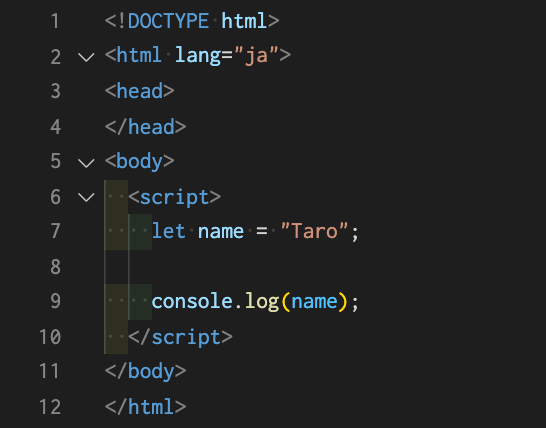

変数について
変数宣言
変数とは、データ値を格納（代入）する箱のことです。変数にはあらゆる種類のデータ値を格納できます。
変数は「let」、「const」、「var」というキーワードを使って作成・宣言されます。
現在、「var」はあまり使用しない為、「let」、「const」を使うようにしましょう。
それぞれの使い分けについてはこちらの参考サイトリンクを確認してください。
let name = "Taro";
上記の記述を解説すると、「let」が変数宣言、「name」が変数名となっており、そのnameという変数の中に「Taro」という文字列を格納（代入）したということです。変数をイメージする際は箱をイメージするとわかりやすいです。
変数に関する参考サイトリンクになります。確認してみてください。
では下記のプログラムを実行してみてください。

このように、console.logの（）の中に変数nameを指定すると、代入されていた値がコンソールに表示されます。
変数名に関して
変数名には使えないものもあります。
- 変数名には文字、数字、ドル記号（$）、アンダースコア（_）が使用できる。ただし数字は先頭に使えない。
- 予約語は変数に使えない。
- 変数の大文字と小文字は区別される。
- 命名規則はキャメルケース（camelCase）。つまり変数はいつも小文字で始まるが、複合語の後続ワードの先頭は大文字とする。
※変数には任意の名前をつけられますが、記述的かつ簡潔な名前を選ぶことが大切です。
変数の便利な点
変数の便利な点をご紹介します。
- 何度も繰り返し使用が可能。その為、効率良くコードを記述することが可能。
- 上書きが可能。変数を上書きする際は「let」は無しでOK。一度宣言しているといらなくなる。「const」で宣言した変数は上書き自体ができない。
let number = 10;
number = number + 12;（numberという変数に+12をしているということ。そのため、numberには"22"という数値が代入されているということになる。）
- 再代入が可能。再代入はプログラミングにおいてよく行われる作業。「const」で宣言した変数は再代入自体ができない。
let name = "taro";
name = "momotaro";（"taro"という文字列を代入していたnameという変数に再度"momotaro"という文字列を代入し直している。そのため、現在は"momotaro"がnameには代入されている。）
※ただ、変数の宣言時「let」ではなく「const」を使える時は常に使うことがベストです。
再宣言、再代入のどちらもできないことに加えて、スコープも狭い「const」は最も制約が多いからこそ、意図しない実装を防ぐ = 安全なキーワードといえます。
- 同じ変数名を使うときに使えるショートカットの記述がある。
- 「+=」、「-=」、「*=」、「/=」などを使うと記述量をショートカットできる。answer = answer + 10; → answer += 10; これらは同じ結果が得られる。
- さらにショートカットできる記述がある。例えば、1だけ＋したいや、1だけーしたい場合など。answer++;（インクリメント：加算）、answer--;（デクリメント：減算）という記述方法。後ほど紹介する「ループ処理」でよく使用されます。
チャレンジ課題
では変数を使って、課題にチャレンジしてみてください。
- console.log()を使用し、コンソール上に「100 + 58の結果は158です。」と表示させてください。"158"の部分は計算した結果を変数に代入してから表示させてください。
- console.log()を使用し、コンソール上に自分の名前をフルネームで表示させてください。
まず自身の名字を変数に代入し、その後変数の上書きとして自身の名前を文字列連結を行い付け足してからコンソール上に表示させてください。
（例）「私の名前は山田太郎です」というような表示ができるようにしてください。